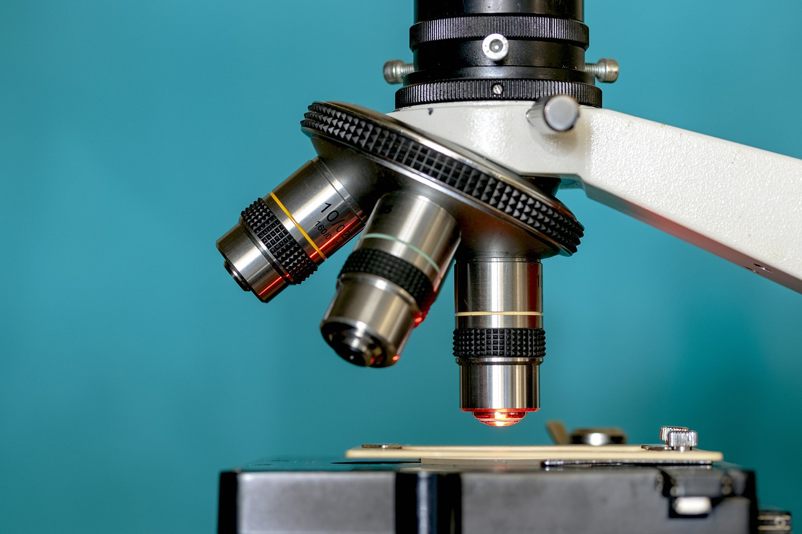

1-7 września 2025 - ZWIĄZKI ORGANICZNE i NIEORGANICZNE
Cukry proste
Dwucukry
Wielocukry
Lipidy
Białka, peptydy, aminokwasy
Mikroelementy
Makroelementy
Pierwiastki biogenne
Kwasy nukleinowe DNA i RNA
Charakterystyka wody
Zadania z arkuszy maturalnych
8-14 września 2025 - ENZYMOLOGIA
Budowa enzymu i jego funkcja
Części niebiałkowe enzymów - kofaktory
Klasy i podklasy enzymów
Proces denaturacji i renaturacji
Kinetyka reakcji enzymatycznej - Stała Michaelisa Menten
Związki wysokoenergetyczne (ATP, ADP, AMP - fosforylacja i defosforylacja)
Regulacja aktywności enzymatycznej przez cząsteczki regulatorowe (aktywatory i inhibitory)
Rodzaje inhibicji: kompetycyjna i niekompetycyjna
Sprzężenie zwrotne szlaku enzymatycznego - ujemne i dodatnie
Zadania z arkuszy maturalnych
15-21 września 2025 - BIOSYNTEZA BIAŁKA
Funkcje białek
Proces denaturacji (koagulacja i peptyzacja) i renaturacji,
Schemat biosyntezy białka
Budowa DNA i RNA - zasady azotowe (puryny i pirymidyny)
Aminokwasy endogenne i egzogenne, tablica aminokwasów
Rzędowość białek
Wiązania występujące w białkach
Translacja - rybosomy
Wizualizacje 3D białek
Transkrypcja a replikacja DNA
Zadania z arkuszy maturalnych
22 września - 5 października 2025 - GENETYKA
Jądro komórkowe i jąderko
Budowa chromosomu
Replikacja DNA
Podział komórki (mitoza i mejoza)
Regulacja ekspresji informacji genetycznej u prokariontów - operon laktozowy i tryptofanowy
Mutacje - liczbowe, strukturalne, punktowe
Choroby genetyczne
I i II Prawo Mendla
Dziedziczenie cech
Zadania z arkuszy maturalnych
6-19 października 2025 - FOTOSYNTEZA, CHEMOSYNTEZA
Przenośniki elektronów
Faza jasna fotosyntezy (zależna od światła)
Faza ciemna fotosyntezy (niezależna od światła) - Cykl Calvina
Budowa chloroplastu - teoria endosymbiozy, organellum półautonomiczne
Barwniki fotosyntezujące - budowa chlorofilu
Chemosynteza - bakterie chemosyntezujące
Zadania z arkuszy maturalnych
20 października - 2 listopada 2025 - ODDYCHANIE KOMÓRKOWE TLENOWE I BEZTLENOWE
Budowa mitochondium - teoria endosymbiozy, organellum półautonomiczne
Przenośniki elektronów
Acetylo koenzym A (acetylo-CoA)
Glikoliza
Reakcja pomostowa
Cykl Krebsa
Łańcuch oddechowy
Oddychanie beztlenowe - fermentacja
Zadania z arkuszy maturalnych
3-23 listopada 2025 - BUDOWA KOMÓREK
WARSZTAT Z MODELAMI KOMÓRKOWYMI I MIKROSKOPEM


Model 3D komórki roślinnej i zwierzęcej
Siateczka śródplazmatyczna szorstka i gładka (ER)
Aparat Golgiego
Peroksysomy
Cytozol
Lizosomy
Wakuola(wodniczka), tonoplast
Błona komórkowa
Ściana komórkowa i jej modyfikacje
Cytoszkielet
Transport przez błonę komórkową
Roztwór hipertoniczny, izotoniczny i hipotoniczny
Gradient stężeń, związki z powinowactwem do wody
Zadania z arkuszy maturalnych
24 listopada - 8 grudnia 2025 - TKANKI ROŚLINNE ORAZ ROŚLINA JAKO ORGANIZM
Tkanka twórcza
Tkanka miękiszowa
Tkanka okrywająca
Tkanka wzmacniająca
Tkanka przewodząca
Tkanka wydzielnicza
Budowa anatomiczna i morfologiczna roślin
Rozmnażanie się roślin
Fitohormony
Ruchy roślin
Transport u roślin
Przegląd roślin: mszaki, paprotniki
Rośliny okrytonasienne (okrytozalążkowe)
Rośliny nagonasienne (nagozalążkowe)
Zadania z arkuszy maturalnych
9-22 grudnia 2025 - TKANKI ZWIERZĘCE
Tkanka mięśniowa
Tkanka łączna
Tkanka nabłonkowa
Tkanka nerwowa
Tkanka płynna
Zadania z arkuszy maturalnych
23 grudnia 2024 - 5 stycznia 2026 - ORGANIZM CZŁOWIEKA
Układ ruchowy
Układ powłokowy
Układ pokarmowy
Układ oddechowy
Zadania z arkuszy maturalnych
6-19 stycznia 2026 - ORGANIZM CZŁOWIEKA
Układ krwionośny
Układ odpornościowy
Układ nerwowy
Zadania z arkuszy maturalnych
20 stycznia 2025 - 2 lutego 2026 - ORGANIZM CZŁOWIEKA
Układ dokrewny
Układ wydalniczy
Układ rozrodczy
Zadania z arkuszy maturalnych
3-16 lutego 2026 - RÓŻNORODNOŚĆ ORGANIZMÓW
Protisty
Grzyby
Wirusy
Bakterie
Zadania z arkuszy maturalnych
17 lutego 2025 - 2 marca 2026 - RÓŻNORODNOŚĆ ORGANIZMÓW
Gąbki
Parzydełkowce
Płazińce
Nicienie
Pierścienice
Stawonogi
Mięczaki
Szkarłupnie
Strunowce
Bezżuchwowce
Zadania z arkuszy maturalnych
3-16 marca 2026 - RÓŻNORODNOŚĆ ORGANIZMÓW
Ryby
Płazy
Gady
Ptaki
Ssaki
Zadania z arkuszy maturalnych
17-30 marca 2026 - EKOLOGIA I OCHRONA ŚRODOWISKA, EWOLUCJA
Organizmy wskaźnikowe (bioindykatory)
Ekosystem
Populacje
Obieg pierwiastków w przyrodzie
Sukcesja ekologiczna
Typy ochrony przyrody
Ochrona gatunkowa
Sukcesja ekologiczna
Typy ochrony przyrody
Ochrona gatunkowa
Zadania z arkuszy maturalnych
31 marca - 13 kwietnia 2026 - BIOTECHNOLOGIA
PCR, RFLP, SSCP, HA, sekwencjonowanie DNA
Elektroforeza żelowa
Klonowanie organizmów
Nowotwory i czynniki kancerogenne
Nokaut genetyczny
Zastosowanie inżynierii genetycznej
GMO, GMM
Zadania z arkuszy maturalnych
14 kwietnia - 8 maj 2026 - POWTÓRKA PRZED EGZAMINEM !

SERDECZNIE GRATULUJEMY UKOŃCZENIA KURSU W MEDSCIENCE !

DZIĘKUJEMY ŻE NAS WYBRAŁEŚ ORAZ
ŻYCZYMY POŁAMANIA DŁUGOPISU NA MATURZE :)